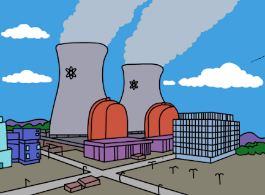

LAS FUENTES DE ENERGÍA Y SU
TRANSPORTE.
TIPOS DE FUENTES DE ENERGÍA
Se puede hacer una clasificación de la energía atendiendo
a su frente, clasificándose en renovables y no
renovables.
Las Fuentes de Energía renovables engloban:
-
Energía solar: la que recibe la Tierra desde el Sol en forma de
radiación.
-
Energía eólica: es la energía cinética del viento.
-
Energía del oleaje y mareometriz: es la energía asociada al movimiento de las olas y
las mareas respectivamente
-
Energía hidráulica: es la energía potencial gravitatoria del agua almacenada en
un
pantano.
-
Energía geotérmica: la energía calorífica que se transfiere al exterior de la
corteza terrestre desde
el interior del planeta.
-
Energía de la materia biológica: es la energía química
de la
biomasa y de los residuos sólidos
urbanos.
Las Fuentes de Energía no renovables engloban:
- Carbón: mineral que se utiliza bien como combustible o en las centrales térmicas.
- Petróleo: mezcla de líquidos de cuya destilación se obtienen múltiples productos con aplicaciones
variadas.
- Gas natural: mezcla de gases, fundamentalmente alcanos ligeros, se encuentran en los yacimientos
caloríficos; tiene un elevado poder calorífico.
- Combustibles nucleares: utilizables en las centrales nucleares, actualmente de fisión.
TRANSPORTE DE LA ENERGÍA
El transporte y la distribución de la energía ha ocasionado múltiples accidentes.
El transporte de la energía varía dependiendo del tipo de energía a transportar.
El transporte del carbón: se lleva a cabo principalmente por carretera y ferrocarril.
El transporte del petróleo: se realiza mayoritariamente por oleoductos y petroleros.
El transporte de la energía eléctrica: se lleva a cabo a través de las redes eléctricas.
El medio ambiente también causa impactos importantes sobre el sistema energético.
Más información en:
